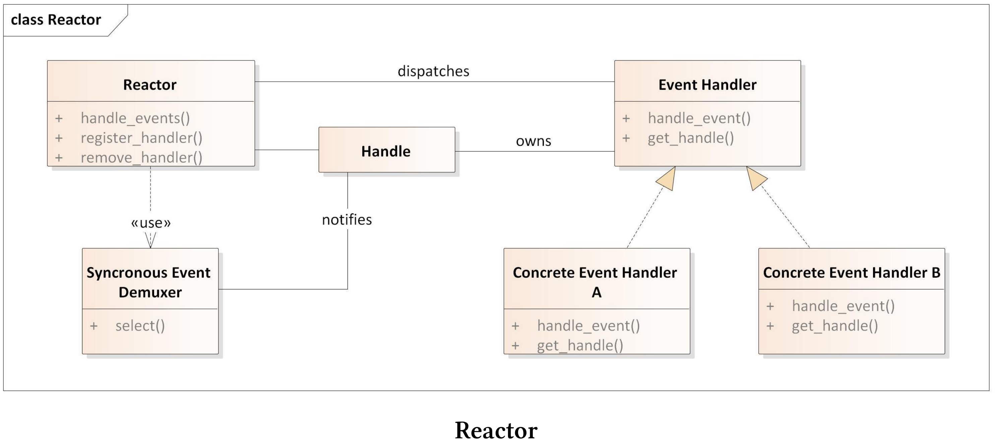
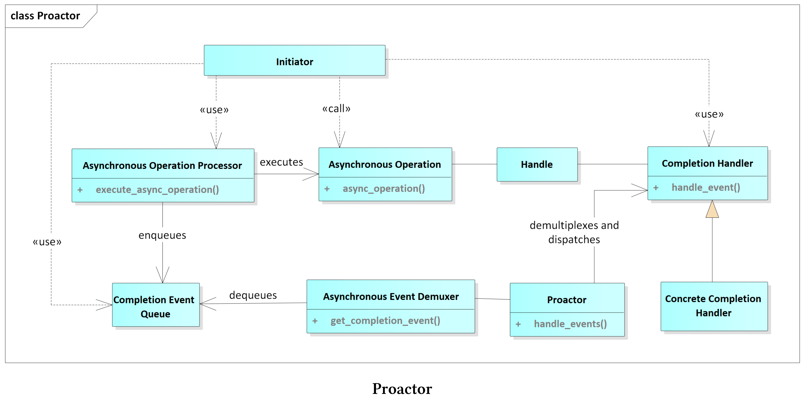

半同步/半异步
半同步/半异步模式会对并发系统中异步和同步服务进行解耦，从而在不过度降低性能的情况下简化编程。该模式引入了两个可以相互通信的层，一个用于异步，另一个用于同步。

半同步/半异步模式通常用于服务器的事件循环或图形界面。事件循环的工作流是将事件请求插入队，并在单独的线程中同步处理。异步处理确保了运行效率，而同步处理简化了申请流程。异步服务层和同步服务层分解为两个层，并且在这两个层之间有队列坐标。异步层由较底层的系统服务(如中断)组成，而同步层由较高层的服务(如数据库查询或文件操作)组成。异步层和同步层可以通过队列层相互通信。
优点和缺点
半同步/半异步模式的优点和缺点是什么?
- 优点:
- 异步和同步分界线很明确。底层系统服务在异步层中处理，高层服务在同步层中处理。
- 对请求队列处理的层，保证了异步层和同步层的解耦。
- 清晰的分离使软件更容易理解、调试、维护和扩展。
- 同步服务中的阻塞不会影响异步服务。
- 缺点:
- 异步层和同步层之间交叉的部分可能会导致开销。通常，因为异步服务通常在内核空间中运行，同步服务在用户空间中运行，所以“边界的部分”会涉及内核空间和用户空间之间的上下文切换。
- 为了严格分离各层，要求复制数据或数据是不可变的
半同步/半异步模式通常用于事件的多路分解和调度框架，如Reactor或Proactor模式。
Reactor模式
Reactor模式也称为调度程序或通知程序。该模式是一个事件驱动的框架，用于将多个服务请求并发地分发到各个服务端。
使用要求
服务器应该并发地处理客户端的请求。每个客户端的请求都有一个唯一标识符，并支持映射到特定的服务端。以下几点是Reactor必备的：
- 不阻塞。
- 支持最大吞吐量，避免不必要的上下文切换，避免数据的复制或同步。
- 易于扩展，以支持服务的修改。
- 不使用复杂的同步机制。
解决方案
对于支持的服务类型，实现一个事件处理程序来满足特定客户端的请求。反应器中使用注册的方式，将服务端的事件处理程序进行注册，这里使用了事件解复用器来同步等待所有传入的事件。当一个事件到达时，反应器得到通知，并将相应的事件分派给特定的服务。
组件

- 句柄:
- 句柄标识了事件源，如网络连接、打开文件或GUI事件。
- 事件源生成连接、读或写等事件，这些事件会在句柄上进行排队。
- 同步事件多路分解器:
- 同步事件多路分解器会等待一个或多个事件。多路分解器会进行阻塞，直到关联的句柄能够处理该事件为止。
- 事件处理接口:
- 事件处理程序定义了处理特定事件的接口。
- 事件处理程序定义了应用程序支持的服务。
- 特定事件处理程序：
- 特定的事件处理实现，由事件处理接口确定。
- 反应器:
- 反应器支持接口注册和注销。
- 反应器使用同步事件多路分解器，例如系统调用select, epoll或WaitForMultipleObjects来等待特定事件。
- 反应器将事件映射到具体处理程序上。
- 反应器会对事件循环的生命周期进行管理。
反应器(而不是应用程序)等待特定事件，并进行分解和分派。具体的事件处理在反应器中注册，反应器改变了控制流程。反应器等待特定事件，并调用特定的处理程序。这种控制的倒置，称为好莱坞原则。(译者注：“不要给我们打电话，我们会给你打电话(don‘t call us, we‘ll call you)”这是著名的好莱坞原则。)
下面的代码段显示了C++框架的事件循环——自适应通信环境(ACE)。
// CTRL c
SignalHandler *mutateTimer1 = new SignalHandler(timerId1);
// CTRL z
SignalHandler *mutateTimer2 = new SignalHandler(timerId2);
ACE_Reactor::instance()->register_handler(SIGINT, mutateTimer1);
ACE_Reactor::instance()->register_handler(SIGTSTP, mutateTimer2);
// "run" the timer.
Timer::instance()->wait_fot_event();
第2行和第5行定义按CTRL+c和CTRL+z的键盘事件的信号处理程序。第7行和第8行记录它们，事件循环从第12行开始。
优点和缺点
反应器模式的优点和缺点是什么呢?
- 优点:
- 框架和应用逻辑解耦。
- 各种具体处理程序的模块化。
- 接口和实现的分离，使服务更容易适应或扩展。
- 整体结构支持并发。
- 缺点:
- 需要调用事件分解系统。
- 长时间运行的程序会阻塞反应器。
- 反转控制使得测试和调试更加困难。
半同步/半异步模式通常在反应器模式中，用于在独立线程中对客户端请求的响应。
Proactor模式是反应器模式的异步变体。反应器模式同步地分解和分派事件处理程序，而Proactor模式异步地分派事件处理程序。
Proactor模式
Proactor模式允许事件驱动的应用程序，对异步操作完成时触发的服务请求进行多路的分解和分派。
使用要求
事件驱动程序(如服务器)，其性能可以通过异步处理服务来提高。为了实现这种方式，事件驱动程序必须同步处理多个事件，从而避免昂贵的数据同步或上下文切换。此外，修改后的服务应该很容易集成入系统，应用程序应该避免对多线程和同步方式进行挑战。
解决方案
将服务分为两部分：异步运行的长时间操作和处理操作结果的程序。结果处理程序与反应器模式中的事件处理程序非常相似，不过异步操作通常是操作系统的工作。所以，作为反应器模式，Proactor模式定义了事件循环。
异步操作(如连接请求)是该模式的独特之处，并且在不阻塞调用线程的情况下执行操作。当耗时相当长的操作完成时，它将一个完成事件放入完成事件队列，Proactor通过使用异步事件多路分解器在队列上等待。异步事件多路分解器将从队列中删除完成事件，而Proactor将其分派给特定的处理程序，处理操作的结果。
组件
Proactor模式由九个组件组成。

- 句柄:
- 表示操作系统的实体(如套接字)，可以生成完成事件。
- 异步操作:
- 通常异步执行耗时相当长的操作。可以在套接字上进行读或写操作。
- 异步操作处理器:
- 执行异步操作，完成后在完成事件队列上注册完成事件。
- 完成事件接口:
- 定义处理异步操作结果的接口。
- 完成事件处理逻辑:
- 用特定的程序处理异步操作的结果。
- 完成事件队列:
- 作为完成事件的缓冲，直到被异步事件分解器移出队列。
- 异步事件多路分解器:
- 在完成事件队列上等待完成事件时，可以阻塞程序。
- 从完成事件队列中删除完成事件。
- Proactor:
- 调用异步事件分解器对完成事件进行脱队操作。
- 分解和分派完成事件，并调用特定的处理程序处理完成事件。
- 创建者:
- 调用异步操作。
- 可与异步操作处理器进行交互。
优点和缺点
Proactor模式的优点和缺点是什么呢?
- 优点:
- 应用程序将独立的异步功能进行功能性分离。
- Proactor的接口可用于支持不同操作系统上的多种异步事件分解器。
- 应用程序不需要启动新线程，因为耗时相当长的异步操作会在调用者的线程中运行。
- Proactor模式可以避免上下文的切换。
- 应用程序的逻辑部分不启动任何线程，因此不需要同步。
- 缺点:
- 为了高效地应用Proactor模式，操作系统需要支持异步操作。
- 由于操作启动和完成之间在时间和空间上的分离，调试或测试程序相当困难。
- 异步操作的调用和完成事件的维护需要额外的内存。
Asio，即「异步 IO」(Asynchronous Input/Output)
随着Boost.Asio库可能作为网络库成为C++23的一部分，在未来大家可以在C++中轻易实现Proactor模式了。Boost.Asio是由Christopher Kohlhoff的提供，是“一个用于网络和低级I/O编程的跨平台C++库，并使用现代C++为其他开发者提供了一致性异步模型”。